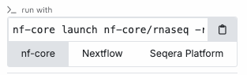
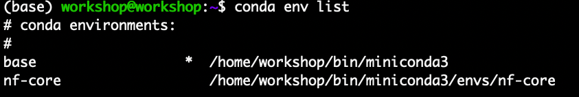
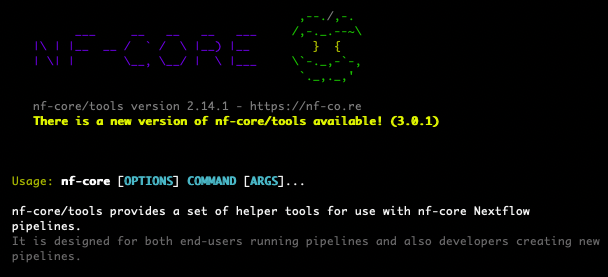

nf-core
In this workshop we will using nf-core https://nf-co.re/ pipelines, which have been built with nextflow, to analyse RNAseq data. There is a long list nf-core pipeline growing as fast as the field of genomics. Because the aim is to be able to use these for your own research, I’ve had to narrow focus on three of the most usable pipelines.\
1. nf-core/RNAseq
2. nf-core/DifferentialAbundance
3. nf-core/smRNAseq
nf-core pipelines are build with a strict structure and key principles.
- Documentation
- Stable Releases
- Open source
- CI testing
- Run anywhere
- packaged software

To take a closer look at what nf-core pipelines are available, let’s make use of the nf-core tools
nf-core tools
The nf-core command is it’s own seperate toolkit. It isn’t necessary for running nextflow pipelines, but it can aid usability and you may find it’s syntax more approachable. For each nf-core pipeline there are multiple ways to run the software, with three of them presented on the homepage of each pipeline.
1. nexflow run
2. nf-core launch
3. Seqera Platform

nf-core tools has been installed to your VM onto its own conda channel - see instalation instructions on the setup page.
to activate this conda environment with nf-core tools available, run the following.
conda activate nf-core
# you can see the change of conda environments with
conda env listchanging from base environment to the nf-core environment

Now you can use the nf-core command to get to know what it offers.
nf-core -hyou should see a list, with the apple-core header image.

you should see a list, with the apple-core header immage.
You can use the ’list’ command to see the available pipelines.
nf-core list I count 95 different pipeline from this.
Narrowing down the search to those with ‘rna’ as a search term.
there is also the ‘star’ metric to get an idea of the popularity.
nf-core list -s stars‘rnaseq’, ‘differentialabundance’ and ‘smRNA’ are all strong contenders in popularity.
There are many other great analysis pipelines on that list, and this workshop can’t go into detail into all of them. But I’ll use this opportunity to ask what genomics applications the participants are using, and go through some I’ve tried.
The whole list of pipelines is on the website. nf-core/pipelines

nf-core launch nf-core/rnaseq- use the arrow keys to select version ‘3.14.0’ , press enter
- use the arrow keys to select ‘Web based’
- LOTS of TEXT to FILL OUT here
- if we have time at the end can go through other pipelines in more details if anyone has specific questions
scp